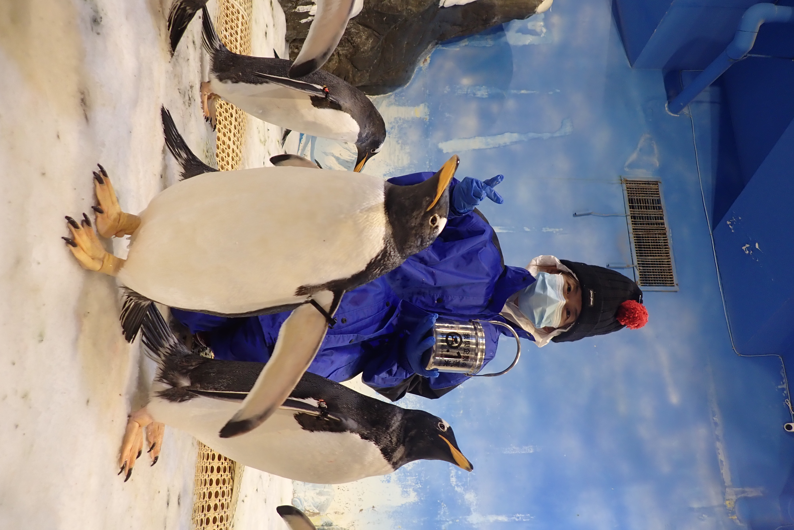

在大自然裡找回內心的秩序
現代生活的節奏太快，我們常常忘記了慢下來呼吸的感覺。上個週末，我獨自去了一趟森林步道，試著用五感去體驗周圍的一切...
收集日光、綠意與生活中的零碎靈感。
你好，我是 CHI。歡迎來到這片安靜的網路森林。
我喜歡親近自然，也喜歡在日常中慢下來觀察那些容易被忽略的細節。這個空間是我的個人雜筆與部落格，用來安放生活中的奇思妙想、閱讀心得與旅行痕跡。
希望你在這裡也能找到一絲平靜與共鳴。

現代生活的節奏太快，我們常常忘記了慢下來呼吸的感覺。上個週末，我獨自去了一趟森林步道，試著用五感去體驗周圍的一切...
在鋪天蓋地的社交媒體通知中，我們該如何保留一片純淨的思考空間？這篇文章聊聊為什麼我決定建立這個不被演算法干擾的個人網站...
🐧歡迎在這邊跟小企鵝打聲招呼！💬登入留言或，留言區下方欄位輸入暱稱及email(可隨便打)後點選‘post as guest’框框就能匿名留言囉